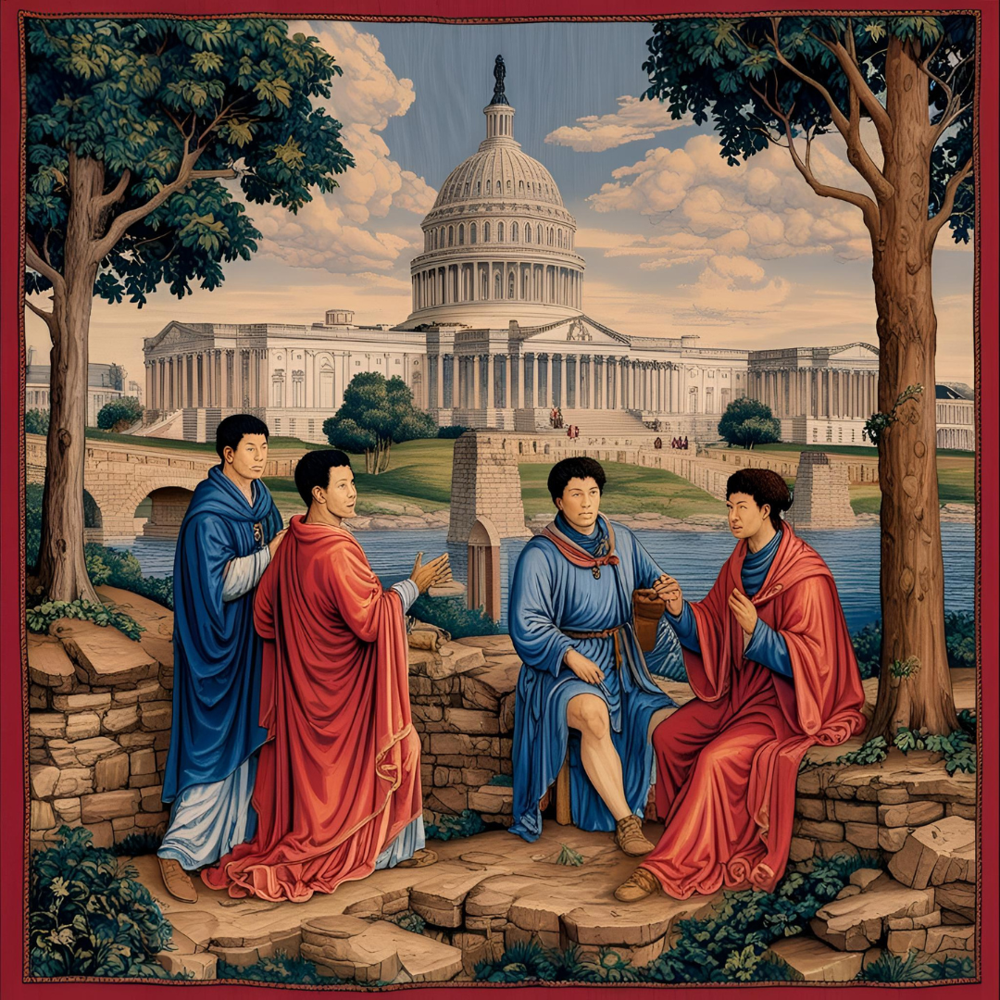

Much was lost in the dark years, which came after Those Who Came Before disappeared and which lasted for longer than memory, and yet much has been remembered, by those like the Brothers and Sisters of the College of St. James.
Across the vast lands of this America, faiths and peoples and tribes have begun again to populate the ruined cities of the World that Was, and have done what seems most incredible --
They have started to build again.
It is into this world that a young monk of the College of St. James, Paul Biology, began his journey into a world that was to him most unknown, and had become strange and alien to even the most travelled and read of his order. For, though they of the College have remembered what This America once was - a place of Liberty, Prosperity, and the Pursuit of Happiness, there are few beyond those walls far in the woods of the Duchy of Mann who recall much, if anything, of that dream.

The Procession of the Federal Church through the Brother's City
Though Paul, and the Brothers and Sisters of the College of St. James, live far from anything
that might be called luxury, they at least know a comfort foreign to the vast majority of the inhabitants of This
America. Most live in a state of servitude, tilling the earth and plying their trades only for the pleasure of
whatever mayor, priest, bigman, duke, or lord they have the fortune to serve under.
Many live in the strange and
broken structures of Those Who Came Before, and they count themselves lucky for it, as the engineering and architecture
of that World Before are yet unparalleled by anything of This America, save the most magnificent projects of the wealthiest
kingdoms and cities. Hunger and sickness are common, and the threat of a cold winter, a swealtering summer, and the great
storms sent from the nor'east by the Fey-Who-Live-Across-the-Seas can ruin even the most stalwart and industrious of homesteads.

The Home of a Peasant in the Duchy of Mann
And so, as Paul comes to find, the Wheel of History continues on. Kings and Empires rise and fall,
young men go to war, children are born, the elderly die, and the people turn to whatever faith they are allowed to
seek some solace from the merciless passage of seasons and years.
But not all is grim, and dark, for with every season
and with every year more children are born than the old who pass, the herds increase, new fields are plowed, hamlets turn
into villages and villages into towns and towns into cities, and the combined efforts and purpose of the peoples of This
America again begin to renew and remake the world.
Will Paul find hope and light in what he can only see as a fallen world,
knowing something of Those Who Came Before? He, and the College of St. James, for the first time in living memory, hope the answer
might be yes.
For there is a new king, a new empire, arising from the ruins of the old. The King-Governor
of the Empire-State, ruling from the Isle of Manahatta and from his Fortress-Cathedral at In-Pont, has announced to all the realms
and lands from the marbled ruins of Columbia to the northern reaches of the Duchy of Mann that He will bring about a restoration of
that world, that He has unlocked, at last, with the blessings of His God Adam, the secrets that once brought light to This America -
and will again.
It is to this man that Paul will travel, and will discover the fate of those who go in search of what has been lost.

Women of Nassfolk Working under the Restored Brook's Bridge
A Merchant's Council at the Capitol
{kind=link}